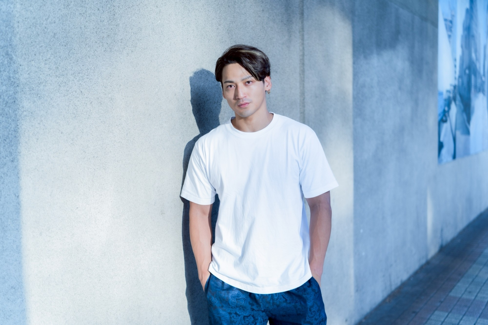
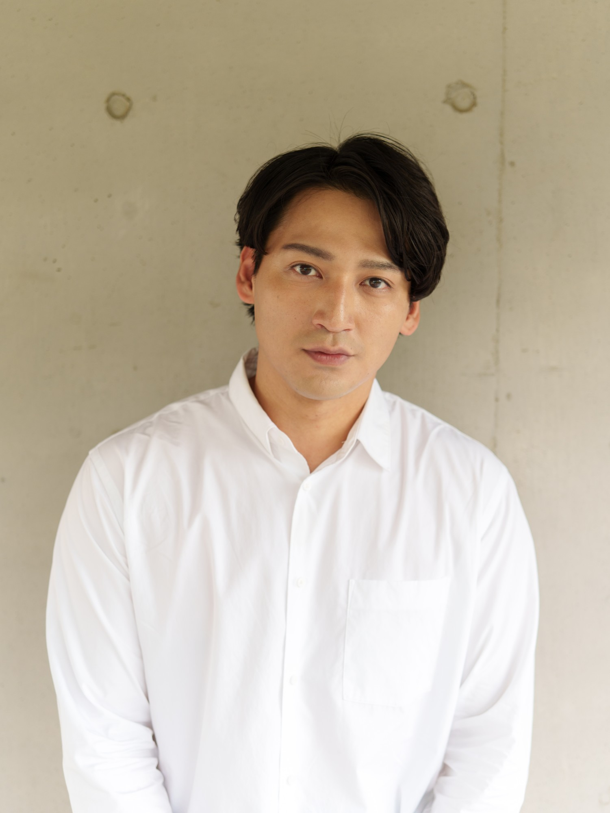
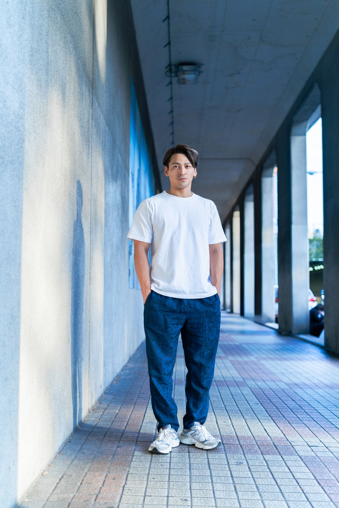

KiyotakaUji
宇治 清高
Actor / Model
Sho / Ultraman Victory in “Ultraman Ginga S”, “Kamen Rider Fourze” and more.
View profile01Profile
Profile

Born December 19, 1993 in Tokyo. Made his acting debut in 2008 and has since appeared in TV dramas, films and commercials. Currently working as a freelance actor.
- Name
- Kiyotaka Uji (宇治 清高)
- Born
- December 19, 1993
- From
- Tokyo, Japan
- Height
- 182 cm (6′0″)
- Blood type
- O
- Occupation
- Actor, model
- Active
- 2008 –
- Agency
- Freelance
- Interests
- Strength training, the outdoors, collecting tea leaves
- Skills
- Baseball, basketball

02Biography
Biography
- 2008
Acting debut, followed by appearances in TV dramas, commercials and music videos.
- 2011
Appears in “Kamen Rider Fourze” as Nitta / Unicorn Zodiarts.
- 2012
Appears in the films “Another” and “Lesson of the Evil”.
- 2014
Plays Sho, the second protagonist who transforms into Ultraman Victory, in “Ultraman Ginga S”.
- 2015
Stars in “Ultra Fight Victory”. Leaves Stardust Promotion in November after seven years and goes freelance.
- 2018
Stars in the stage production SEPT Vol.8 “MIRRORION” at Hakuhinkan Theater, Ginza.
- 2022
Appears in “Kamen Rider Revice” as Tabuchi.
03Works
Works
Selected works2014Ultraman Ginga SSho
Selected works2011Kamen Rider FourzeNitta / Unicorn Zodiarts
TV Drama
- 2022Tabuchi
- 2020Torao
Hi-Posi: 1986, Nidome no Seishun
- 2018
Trace: Kasoken no Otoko
- 2015Sho
Ultra Fight VictoryLead / main cast
- 2015Sho
Ultraman X
- 2014Sho
Ultraman Ginga SLead / main cast
- 2014Man
Tales of the Unusual: Autumn 2014 Special
- 2013Kizu
Saito-san 2
- 2012Furusawa
Blackboard: Jidai to Tatakatta Kyoshitachi (Night 2)
- 2012Saiki
Cho Saigen! Mystery: “Kaze Shojo”
- 2012
Beginners!
- 2011Kashiwagi
Sakura Kara no Tegami: AKB48 Sorezore no Sotsugyo Monogatari
- 2011Nitta / Unicorn Zodiarts
- 2010Gamo / Phantom Thief Dalmatian
Manpuku Shojo Dragonet
- 2009
Goro's Bar Drama Special
- 2008
Watashi ga Kodomo Datta Koro: Yuji Tanaka
Film
- 2022
- 2021Detective
Detective Chinatown 3
- 2021Nagata
- 2020Sho
- 2017Ultraman Victory (voice)
- 2016Toshio
Dokumushi
- 2015Sho
Ultraman Ginga S The Movie: Showdown! Ultra 10 Warriors!!Lead / main cast
- 2012Teshigawara
Another
- 2012Nitta (cameo)
Kamen Rider Fourze the Movie: Space, Here We Come!
- 2012Matsui
Lesson of the Evil
- 2011Sugawara
Usotsuki Mii-kun to Kowareta Maa-chan
- 2011
Ringing in Their Ears
- 2010
Memoirs of a Teenage Amnesiac
- 2009Kita (young)
Be Sure to Share
Stage
- 2018Naruse
SEPT Vol.8 “MIRRORION”Lead / main cast
Web Series
- 2021–22Ultraman Victory (voice)
- 2019Ultraman Victory (voice)
Ultra Galaxy Fight: New Generation Heroes
Direct-to-Video
- 2023Tabuchi
Revice Forward: Kamen Rider Live & Evil & Demons
Variety
- 2010–11
Fukashigi Tanteidan
Commercials
- 2015
Bandai “DX Knight Timbre”
- 2014–15
JR East “JR SKI SKI”
- 2014
Yakult “Mirouge”
- 2014
Bandai “DX Victory Lancer”
- 2010
Shiseido “Sea Breeze”
- 2008
ANA (All Nippon Airways)
- 2008
Ichishin Gakuin
Music Videos
- 2012
INFINITY16 welcomez MINMI & JAY'ED “Ame Nochi Hare”
- 2010
SEAMO “Hajimari to Owari”
- 2010
LOVE “Watashi Au Mono”
- 2008
GReeeeN “Kiseki”
- 2008
Angela Aki “Tegami ~Haikei Jugo no Kimi e~”
Lead / main cast marks lead and main-cast roles.
04Social
Social
The latest posts appear here automatically.
05Contact
Contact
For casting, booking and press inquiries, please get in touch below.
kiyotaka.uji.official@gmail.com